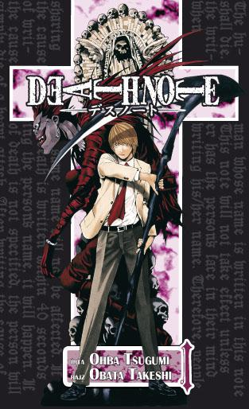
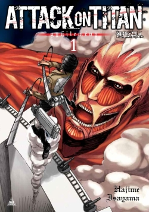

Death Note (デスノート; Deszu Nóto; Hepburn: Desu Nōto)
(Anime és Manga) A manga első fejezetének megjelenése után néhány évvel animesorozat is készült. A sorozat cselekménye Jagami Light, egy középiskolás diák tetteit követi nyomon, akinek birtokába kerül egy természetfeletti erővel rendelkező jegyzetfüzet, a „Halállista”, amelyet egy Ryuk nevű halálisten hagyott el a földi világban. A Halállista birtokosa bárkit meggyilkolhat, akinek ismeri az arcát és a nevét, majd utóbbit leírja a füzetbe. Light a jegyzetfüzet segítségével egy olyan utópikus világot akar megteremteni és uralni, amelyben nem létezik a gonosz, bármennyi emberéletbe is kerüljön az, egy „Kira” becenevű nemzetközi sorozatgyilkos álnéven. A sorozat fejezetei első alkalommal Japánban, a Shueisha által kiadott Súkan Sónen Jump (angol nyelvterületen gyakran Weekly Shōnen Jump) magazinban jelentek meg 2003 decembere és 2006 májusa között.[1] A sorozat tankóbon kötetekben 2004 májusa és 2006 októbere között jelent meg, és azóta több nyelvre is lefordították.[2] A tizenkét kötetes mangából 2006 októberéig körülbelül 20 millió példány kelt el Japánban.[3] A Death Note az.....
Naruto (NARUTO -ナルト-)
(Anime és Manga) A manga első fejezete Japánban a Shueisha által kiadott Súkan Sónen Jump (angol nyelvterületen gyakran Weekly Shōnen Jump) 43. számában jelent meg 1999-ben, 2014. november 10-én megjelent a manga utolsó, 700. fejezete. A sorozatnak azóta 72 önálló kötetét adták ki. A mangát Észak-Amerikában a Viz Media Shonen Jump című magazinjában, majd pedig kötetek formájában kezdte megjelentetni, mely a kiadó egyik legsikeresebb sorozata lett. Japánban a manga köteteiből a 44. számig bezárólag összesen 89 millió példány kelt el.[1] Az angol nyelvű kiadás többször is megjelent a USA Today könyvlistáján, a 7. kötet pedig a fogyasztók szavazatai alapján elnyerte a 2006-os Quill-díjat a legjobb képregényalbum (Graphic Novel) kategóriában.[2] Magyarországon a Naruto első kötete 2007. május 3-án jelent meg a MangaFan kiadó gondozásában.[3] A sorozat anime-adaptációját a Studio Pierrot és az Aniplex készítette el, melynek első epizódját a TV Tokyo és a műholdas anime-csatorna, az Animax 2002. október 3-án[4] sugározta. Az anime első sorozata 220 epizódot ért meg, második sorozatát Naruto sippúden címen 2007. február 15-én[5] kezdték sugározni. Az animesorozat mellett a Studio Pierrot hat animációs filmet és több OVA-epizódot is készített. Az animét az Egyesült Államokban a Cartoon Network tűzte műsorára először 2005. szeptember 10-én Toonami című műsorblokkjában. Kanadában az anime premierje 2005. szeptember 15-én, a YTV Bionix című műsorában volt. A Naruto sippúdent 2009. |október 28-ától vetítik az Egyesült Államokban a Disney XD csatornán. Az Egyesült Királyságban az animét 2006. július 22-én a Jetix tűzte műsorára. Az anime magyarországi bemutatója 2007. február 12-én volt szintén.....
Dragon Ball (ドラゴンボール)
(Anime és Manga) A manga első fejezetének megjelenése után néhány évvel animesorozat is készült. A sorozat cselekménye Jagami Light, egy középiskolás diák tetteit követi nyomon, akinek birtokába kerül egy természetfeletti erővel rendelkező jegyzetfüzet, a „Halállista”, amelyet egy Ryuk nevű halálisten hagyott el a földi világban. A Halállista birtokosa bárkit meggyilkolhat, akinek ismeri az arcát és a nevét, majd utóbbit leírja a füzetbe. Light a jegyzetfüzet segítségével egy olyan utópikus világot akar megteremteni és uralni, amelyben nem létezik a gonosz, bármennyi emberéletbe is kerüljön az, egy „Kira” becenevű nemzetközi sorozatgyilkos álnéven. A sorozat fejezetei első alkalommal Japánban, a Shueisha által kiadott Súkan Sónen Jump (angol nyelvterületen gyakran Weekly Shōnen Jump) magazinban jelentek meg 2003 decembere és 2006 májusa között.[1] A sorozat tankóbon kötetekben 2004 májusa és 2006 októbere között jelent meg, és azóta több nyelvre is lefordították.[2] A tizenkét kötetes mangából 2006 októberéig körülbelül 20 millió példány kelt el Japánban.[3] A Death Note az.....Rövid idővel a megjelenés után a manga olyan sikerre tett szert, hogy a Toei Animation emberei is meggyőződtek arról, hogy el fog készülni majd egy animesorozat és egy játékfilm is. Az anime 1986 februárjában került bemutatásra a Fuji televízión, hetente egyszer - szerda este - sugároztak egy új epizódot.
Az animesorozat nagyon hasonlított a mangára (a Sailor Moonal ellentétben...
1986 decemberében, megjelent az első mozis változata az animének....

One Piece ワンピース Wan Pīsu
(Anime és Manga) A világon valaha élt legszabadabb ember kétségkívül nem más, mint Gol D "Gold" Roger vagy ahogyan manapság emlegetik a kalózkirály. A kivégzése napján az összegyűlt tömegből valaki kikiabált és megkérdezte, hogy hova rejtette el a legendás kincsét a One Piece-t. Erre ő így felelt: "A kincseimet akarjátok? Keressétek meg! Mindet egy helyen hagytam." Az emberek, hogy az álmaikat és vágyaikat beteljesítsék elindultak a Grand Line felé. Ezzel elkezdődött a Kalózok Kora. Egy kis faluból a 17 éves Monkey D. Luffy is útnak indult egy csónakkal azért, hogy megszerezze a volt kalózkirály kincsét a One Piece-t és, hogy beteljesítse az álmát, ami a kalózkirállyá válás. Az útja során szegődnek hozzá a legénysége tagjai akiknek mind van egy-egy céljuk, amit el akarnak érni. A kalózcsapatot Luffy "kincséről" nevezték el, ami a szalmakalapja; ők a Szalmakalapos kalózok. A legénység tagjai mind kitűnnek az általuk szeretett foglalkozásban, ez alól talán úgy tűnhet, hogy maga a kapitány, Luffy bújik ki, de a kalandok során rájövünk, hogy az ő erőssége a barátaival való kötelékeken alapul.....